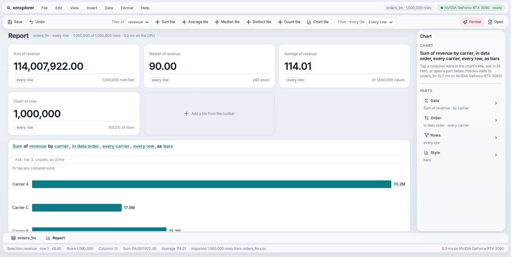
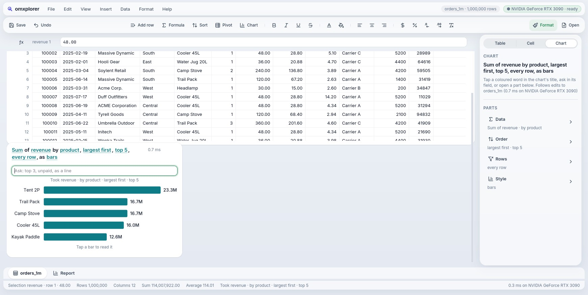
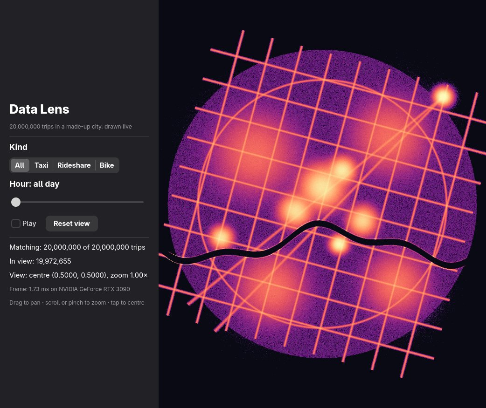
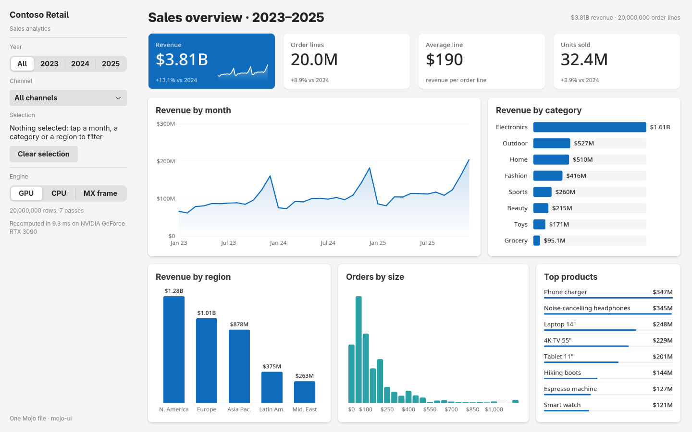
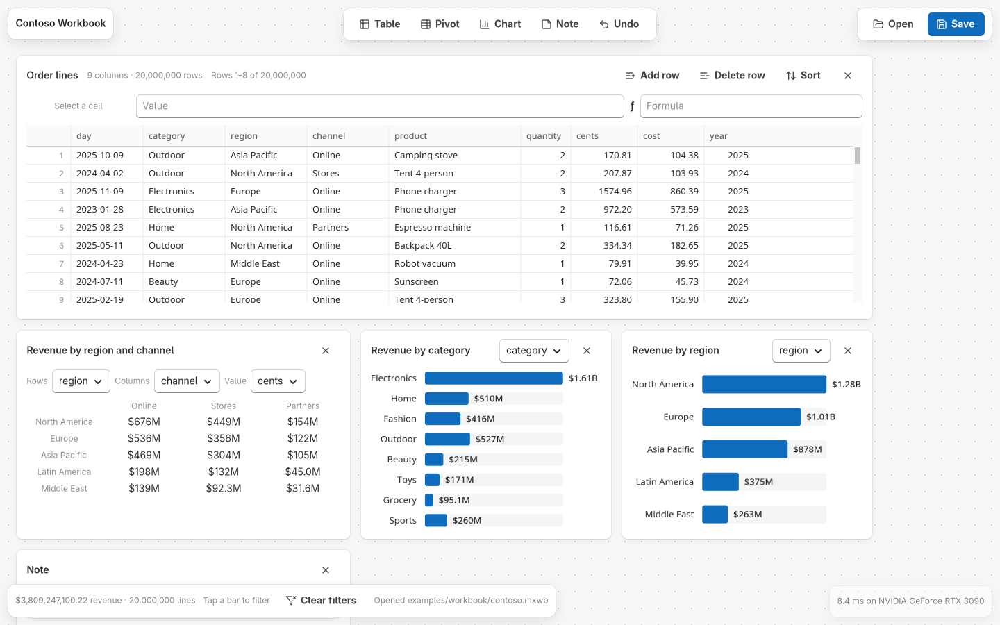
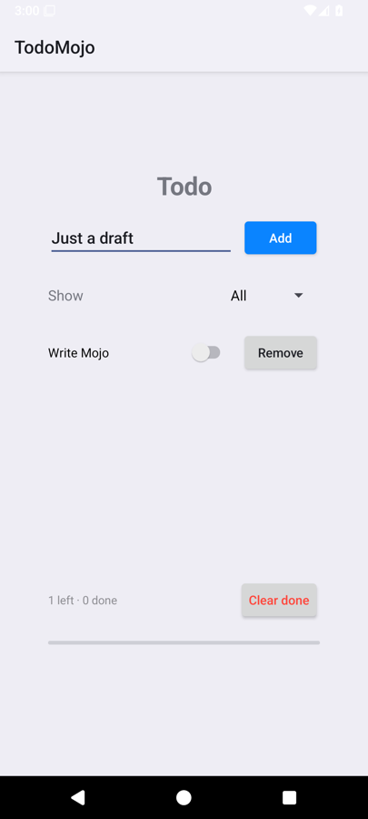

One file. Every screen. Every agent.
Write an app once, in a language that reads like Python. It opens as a real app on Linux, in the browser, on Android, on a Mac and on an iPhone, with each platform's own controls. The heavy lifting runs on the GPU in the same language. And every app you build is already a set of tools an AI agent can use.

Native, not imitated.
A button on Linux is a GTK button, on the web an HTML button, on a Mac an NSButton. Each platform brings its own look, keyboard, text input and screen reader.
The GPU, in the same language.
The function that sums a million rows or colours a pixel is plain Mojo. With a GPU it runs there; without one, the same function runs on the CPU.
People and agents, as equals.
Anything a person can do in an omxapp app, an agent can do through the same controls. Nothing more, nothing hidden.
The sentence is the interface
In omxplorer a chart's title isn't a label. It is the chart. Every coloured word is a setting: tap it and pick another, or just ask.
Sum of revenue by product, largest first, top 5, every row, as bars
The sentence rewrites itself and the bars move to the new answer. A person, a keyboard and an agent all edit the same sentence. When an ask can't be used (a fraction on a whole-number column, a second number condition), it says what it skipped instead of guessing.

Real apps, real data, one language
Every screen below is built from Mojo files on omxapp. No Electron, no web view pretending to be native, no app JavaScript.

Data Lens
Twenty million trips, panned and zoomed live. Every frame recounts all of them on the GPU.

Analytics
A Power BI-style dashboard. Tap a bar and every chart filters, re-aggregating twenty million rows.

The Workbook
Tables, pivots, charts and notes on one free-form page, sharing one set of rows on the GPU.

Android
The same todo file, drawn as real Android views over JNI, driven by real taps on the emulator.
Built for agents from the first line, not adapted later
Most apps meet AI agents through screenshots, pixel coordinates or an API added afterwards. In omxapp the agent is a host, the same way GTK and the browser are.
Every app is MCP tools today
The view tree GTK turns into widgets, the agent host turns into tools: one per button, menu item and field, plus screen, act, read and render. No per-app work.
Nothing a person couldn't do today
A disabled button is no tool. A dialog's buttons exist only while it's open. The screen is the permission model.
It hears what changed today
Each call returns the new texts, what opened or closed, and the tools that appeared or went. No screenshot comparison.
# an agent opens a million rows and asks for a chart → choose-a-file {"path": "orders_1m.csv"} → create-table → insert-chart → ask {"text": "revenue by product, largest first, top 5", "submit": true} ← Did ask. Now: chart0: 0.6 ms Now: inspector: Sum of revenue by product, largest first, top 5, every row, as bars Now: status-bar: Took revenue · by product · top 5 → read ← menubar: orders_1m · 1,000,000 rows menubar: ● NVIDIA GeForce RTX 3090 · ready status-bar: Sum 114,007,922.00 · Average 114.01 # give any omxapp app to Claude Code $ scripts/agent.sh omxplorer
A real session against omxplorer, 2026-10-20, output shortened. Not yet: reading a chart's figures as text, dragging, generating new UI.
Fast enough to feel instant
One Linux machine with an NVIDIA RTX 3090, measured by the project's own checks. Honestly: at 100M rows in memory a median chart takes about 0.7 s and the window waits for it; moving that off the UI thread is next.
The choices, and why
State goes in, a screen comes out. Each platform draws it its own way, and the agent reads it as tools.
✓ = components a script runs on that host. Mac and iPhone build and sign; no check runs them there yet.
- Language
- Mojo 1.1 for the app, the UI framework and the GPU code. Reads like Python, compiles to native code, one language from button to kernel.
- App model
view()describes the screen from state,update(event)changes it. Hosts patch only what changed: an edit rebuilds at most 15 widgets.- Native controls
- GTK 4, HTML, Android views over JNI, AppKit and UIKit through the Objective-C runtime, called straight from Mojo.
- Drawn views
- A Scene: a display list in keyed layers, replayed as GPU render nodes (GTK today). 0.8 ms a frame against 14.2 ms for painted pixels, with 0 texture uploads.
- Data
- omxcore (MX frame), a Mojo data engine on CPU and GPU: sum, median and p90 per group, number conditions, calendar groups; files bigger than memory, streamed.
- Web
- The Mojo app runs in a FastHTML server and HTMX patches the page: one state per tab, shared GPU data, no app JavaScript.
- Looks
- Themes are plugins on top: Liquid, Ledger, Graphite, Blueprint, Fluent, Omarchy, Paper. The framework names none; with no theme an app looks like its platform.
- Proof
- Every goal's checks re-run on GTK, in Chromium and on the Android emulator: results compared with pyarrow, pixels diffed, real input. Nothing is done until a reviewer passes it.